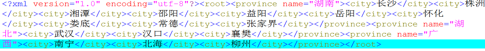

responseXML通过XML获取数据
请选择
请选择
使用AJAX responseXML
在window.onload事件里打印出省份
创建XMLHttpRequest对象
监听xmlhttprequest状态，并破获onreadystatechange事件，readyState=4，status=200
打印出所有的省份
xmlhttprequest.open("method","url","true")
xmlhttprequest.send()
增加省份下拉选项的onchange事件，显示对应的城市
